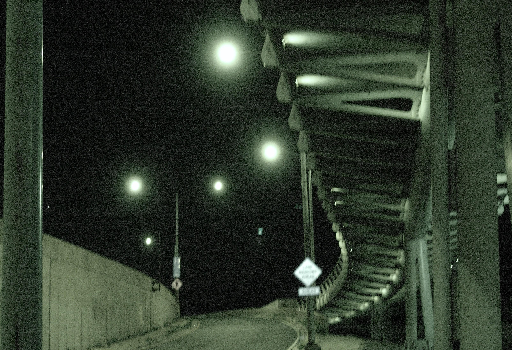

Galería de Capturas
El mundo a través de lentes CCD y cintas magnéticas.
Atardecer en 3.2 Megapíxeles
Capturado con una Canon PowerShot. Observa cómo los colores cálidos se saturan de forma natural.

Noche de Ciudad (Ruido ISO 400)
El clásico "grano" de las cámaras digitales de principios de los 2000s al intentar tomar fotos de noche.